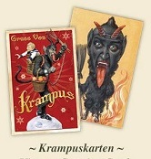

Krampus, in central European popular legend, a half-goat, half-demon monster that punishes and drags misbehaving children to hell at Christmastime.
Krampus, in central European popular legend, a half-goat, half-demon monster that punishes and drags misbehaving children to hell at Christmastime. Krampus is believed to have originated in Germany, and his name derives from the German word Krampen, which means “claw.” He is the devilish companion of St. Nicholas and the two represent the blanace between good an evil. Although Krampus appears in many variations, most share some common physical characteristics. He is hairy, usually brown or black, and has cloven hooves and horns. His long, pointed tongue lolls out, and he has fangs. Krampus carries chains, thought to symbolize the binding of the Devil by the Christian Church. He thrashes the chains for dramatic effect. Bells of various sizes sometimes accompany the chains. Sometimes Krampus appears with a sack or a basket strapped to his back; this is to cart off evil children for drowning, eating, or transport to Hell. Some of the older versions make mention of naughty children being put in the bag and taken away. This quality can be found in other Companions of Saint Nicholas, such as Zwarte Piet.
The history of the Krampus figure has been theorized as stretching back to pre-Christian Alpine traditions. Discussing his observations in 1975 while in Irdning, a small town in Styria, anthropologist John J. Honigmann wrote that:
"The Saint Nicholas festival we are describing incorporates cultural elements widely distributed in Europe, in some cases going back to pre-Christian times. Nicholas himself became popular in Germany around the eleventh century. The feast dedicated to this patron of children is only one winter occasion in which children are the objects of special attention, others being Martinmas, the Feast of the Holy Innocents, and New Year's Day. Masked devils acting boisterously and making nuisances of themselves are known in Germany since at least the sixteenth century while animal masked devils combining dreadful-comic (schauriglustig) antics appeared in Medieval church plays. A large literature, much of it by European folklorists, bears on these subjects. ... Austrians in the community we studied are quite aware of "heathen" elements being blended with Christian elements in the Saint Nicholas customs and in other traditional winter ceremonies. They believe Krampus derives from a pagan supernatural who was assimilated to the Christian devil."
The Krampus figures persisted, and by the 17th century Krampus had been incorporated into Christian winter celebrations by pairing Krampus with St. Nicholas.
Click here to see more information!
In central and Eastern Europe including Austria, Germany, and the Czech Republic, people celebrate traditional parades and in such events as the Krampuslauf, which means "Krampus run" in English. Young men participate dressed as Krampus and attempt to scare the audience with their antics. Such events occur annually in most Alpine towns. Krampus is featured on holiday greeting cards called Krampuskarten.
Krampuskarten usually have humorous rhymes and poems. Krampus is often featured looming menacingly over children. He is also shown as having one human foot and one cloven hoof. In some, Krampus has sexual overtones; he is pictured pursuing buxom women. Over time, the representation of Krampus in the cards has changed; older versions have a more frightening Krampus, while modern versions have a cuter, more Cupid-like creature. Krampus has also adorned postcards and candy containers.
